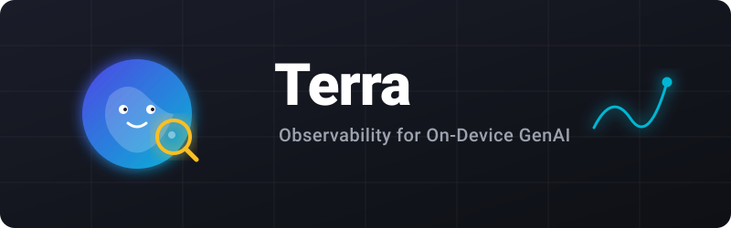

Terra is a privacy-first observability layer for on-device GenAI. Built on OpenTelemetry, giving you production-grade tracing for inference, embeddings, and agents.
Enable tracing for CoreML and HTTP AI APIs with one line. No logic changes needed.
Redacted privacy is the default. No raw prompt/response capture unless explicitly enabled per call.
Native support for MLX, Llama.cpp, CoreML, and Apple's newest Foundation Models.
Start with one-line setup, then compose typed infer/stream/embed/agent/tool/safety calls as your app grows.
try await Terra.start(.init(preset: .quickstart)).infer/stream/embed/agent/tool/safety + run.1import Terra23@main4class AppDelegate: UIResponder, UIApplicationDelegate {5func application(...) {6// One line for global auto-instrumentation7Task { try? await Terra.start() }8return true10}11}
1import Terra23let answer = try await Terra4.infer(5Terra.ModelID("gpt-4o-mini"),6prompt: "Summarize yesterday's changes",7provider: Terra.ProviderID("openai"),8runtime: Terra.RuntimeID("http_api")9)10.run { trace in11trace.tokens(input: 42, output: 18)12return "stubbed-response"13}
1var config = Terra.Configuration(preset: .production)2config.persistence = .defaults()3Task { try? await Terra.start(config) }
Terra bridges the gap between on-device inference and your centralized telemetry stack. Ship to any OTLP-compatible backend with on-device buffering for intermittent connectivity.